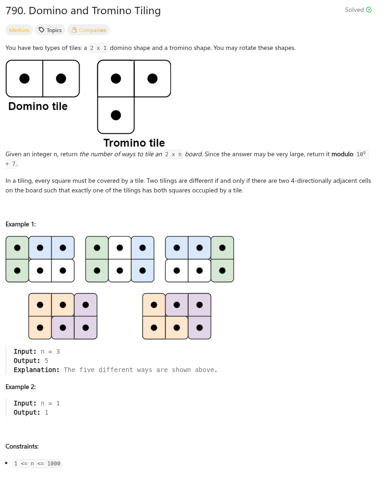

參考資訊：
https://www.cnblogs.com/grandyang/p/9179556.html
題目：

int numTilings(int n)
{
int cc = 0;
long dp[1000] = { 1, 1, 2 };
long mod = 1e9 + 7;
for (cc = 3; cc <= n; cc++) {
dp[cc] = ((dp[cc - 1] * 2) + dp[cc - 3]) % mod;
}
return dp[n];
}